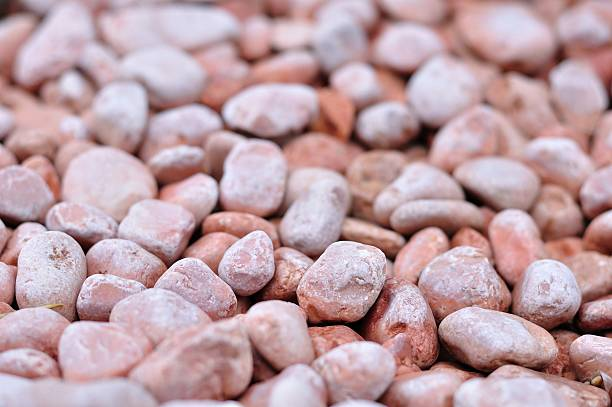

USA - Nationwide
info@lindahardware.pro
USA - Nationwide
info@lindahardware.pro

Discover reliable solar panel installation services near you . Our expert team helps you harness solar energy efficiently and affordably.
Transform your driveway with durable pea gravel that enhances curb appeal while ensuring a smooth, stable surface for everyday use in Usa - Nationwide.
Residential & commercial Pea Gravel
Quality services at affordable prices
Immediate 24/ 7 emergency services


Landscaping can be a transformative experience for any property owner, and incorporating pea gravel can elevate your outdoor space to new heights. Pea gravel offers endless possibilities for landscaping designs ranging from minimalist zen gardens to intricate stone pathways. The versatility of pea gravel allows it to complement a variety of plants and outdoor features, enhancing the overall look of your garden.
, consider using pea gravel in flower beds, around trees, or as a decorative border for your landscaping. It's an excellent choice for creating pathways that guide guests through your garden, as it provides a stable and soft walking surface that won’t compact over time. One popular idea is combining pea gravel with larger stones for a beautifully layered texture that’s eye-catching and functional.
Our team has a wealth of experience in landscape design, helping you select the right type and color of pea gravel to suit your vision. We are committed to turning your ideas into reality, utilizing our extensive experience in the industry to ensure you love your outdoor space for years to come.

Establishing walkways and pathways is essential for guiding visitors and enhancing the flow of your residential or commercial space. Pea gravel is an ideal choice due to its natural beauty and excellent drainage properties. At Pea Gravel, we provide expertly designed pea gravel pathways that enhance accessibility while adding a touch of elegance to your outdoor environments.
Our pea gravel walkways are not only aesthetically pleasing but also practical. The stones create a stable and customizable path, which can be shaped according to your preferences and landscape layout. Whether you desire a meandering path through your garden or a straight walkway in your yard, our high-quality pea gravel can accommodate any design.
Installation is simple with pea gravel. Our team ensures that each step is taken care of—from site preparation to the final installation—allowing you to sit back and admire your new walkway. Additionally, pea gravel encourages proper drainage, preventing water pooling and making your pathways safe and walkable regardless of weather conditions.
With Pea Gravel, your pea gravel walkways in Usa - Nationwide are crafted with precision, ensuring they are durable and long-lasting. Choose us for comprehensive solutions that elevate your property's overall appearance and functionality.

Pea gravel is not just beautiful; it also provides numerous practical benefits when used in garden beds. As a mulch alternative, pea gravel aids in moisture retention, weed control, and offers a great way to visually tie different elements of your yard together. our offerings include high-quality pea gravel selected specifically for gardening purposes.
The various sizes and colors of pea gravel add a layer of elegance to your garden beds while ensuring proper drainage. This is crucial for preventing plant roots from sitting in water, which can lead to rot. Moreover, pea gravel helps regulate soil temperature, creating a more hospitable environment for your plants.
When you work with us, you gain access to our expertise in garden design and soil management. We strive to ensure that your garden beds flourish while staying visually striking. Our commitment to quality materials and skilled installation guarantees a long-lasting and beautiful garden for your property.

Patios are often the heart of outdoor entertainment spaces, and pea gravel can turn an ordinary patio into a stunning focal point. Offering a comfortable, non-slip surface, pea gravel patios are ideal for hosting family gatherings or quiet evenings under the stars. The small stones provide a soft, appealing texture underfoot without sacrificing durability.
At [your company name], we specialize in creating custom patio solutions that suit the needs and style of each homeowner . Our experience means we can guide you through the selection of materials, colors, and sizes of pea gravel that will not only enhance your patio's design but also provide lasting quality.
Our team of experts ensures that the installation is handled with precision and care, focusing on creating proper drainage to prevent pooling water and erosion. Why choose us? Our commitment to excellence and customer satisfaction ensures your patio will not only meet but exceed your expectations, making it the perfect addition to your home.

Safety is paramount when it comes to designing children's play areas, and choosing the right surface is crucial. Pea gravel is a popular choice for playground surfaces, combining safety with durability. Its soft texture provides cushioning against falls, making it an excellent option for families.
At Pea Gravel, our team is committed to installing pea gravel playground surfaces that adhere to safety standards while offering a fun environment for kids. We understand that a well-designed playground encourages children to explore, learn, and play while ensuring their safety with our soft surfacing solutions.
In addition to being safe, pea gravel allows for proper drainage, preventing muddy play areas and keeping surfaces dry and clean. We can customize the playground layout according to your available space and desired features, ensuring both satisfaction and safety for parents and children alike. Trust us for a high-quality pea gravel playground surface tailored to the community needs of Usa - Nationwide.

Providing a safe and comfortable area for pets to play and exercise is essential for pet owners. Pea gravel offers an ideal surface for dog runs and pet areas due to its softness and drainage capabilities. A pea gravel surface is gentle on paws and helps prevent mud and mess in your yard during and after rainfall.
At Pea Gravel, we understand the importance of creating a perfect play zone for your furry friends in Usa - Nationwide. Our team is dedicated to designing and installing pea gravel pet areas that prioritize safety, comfort, and ease of maintenance. We consider the unique needs of pet owners and the best dimensions to create a secure and enjoyable space.
Pea gravel provides excellent drainage, keeping surfaces dry and easy to clean, which is vital for maintaining a healthy environment for your pets. Whether you want a simple run or a lavish play area, we work closely with you to design a space that meets all requirements. Choose us for the best dog runs and pet areas .

Transform your flower beds into stunning focal points with the addition of pea gravel. It’s an excellent mulch alternative for flower beds, providing excellent drainage while maintaining moisture in the soil. The beauty of pea gravel comes not only from its appearance but also from its ability to enhance the health and vitality of your plants.
, using pea gravel in flower beds can help prevent weed growth, making the upkeep of your garden much easier. Its unique texture and color options can also complement a wide variety of flowers, highlighting their beauty.
When you choose our services, you’re opting for eco-friendly options tailored to your garden’s needs. Our team is dedicated to helping you design flower beds that are not only beautiful but well-maintained, ensuring your flowers thrive all year long.

Rock gardens are a beautiful way to create an informal landscape that mimics nature and provides a serene escape. Pea gravel perfectly complements other stones and plants in a rock garden, adding a touch of elegance while ensuring good drainage to prevent water pooling around the plants.
Our experience in creating stunning rock gardens in Usa - Nationwide means we know how to blend different materials and plants harmoniously to achieve your desired aesthetic. Whether you want a modern approach or a classic rustic look, our team can help you design and install a rock garden featuring pea gravel as a key element.
Furthermore, our commitment to quality materials ensures that your rock garden will look beautiful and stand the test of time. Choose us to elevate your outdoor experience with breathtaking rock garden designs tailored to your taste and lifestyle.

Xeriscaping focuses on conserving water by using drought-tolerant plants and materials, making it an environmentally responsible choice for landscaping . Pea gravel is a popular option in xeriscaping due to its aesthetic appeal and excellent infiltration capabilities.
At Pea Gravel, we understand the importance of sustainable landscaping practices and the role pea gravel can play in effective xeriscaping. When properly laid out, pea gravel can prevent soil erosion and provide a beautiful contrast to drought-resistant plants, resulting in a striking yet responsible landscape.
Additionally, it helps maintain soil moisture levels by minimizing evaporation, making it a smart choice for gardeners interested in conserving water. Not only does your landscape look beautiful with our expertly designed xeriscaping solutions, but you can also have peace of mind knowing it’s an eco-friendly choice. Work with us for your xeriscaping needs and contribute to a greener tomorrow.

Making a lasting first impression starts with your business's parking lot. Using pea gravel for parking lots presents an attractive, eco-friendly alternative to traditional asphalt or concrete, creating a positive environment for employees and customers alike.
Pea gravel allows excellent drainage, which can reduce the risk of flooding and standing water, ultimately extending the lifespan of your parking lot surface. Our experience ensures that we understand local regulations and best practices to create a durable, functional, and visually appealing parking area that meets your needs.
Choosing us means you’ll receive exceptional service and high-quality materials. Our team is dedicated to delivering safety, durability, and aesthetics, making sure your parking lot enhances your business's overall appeal.

Whether hosting weddings, parties, or community events, having an inviting outdoor space is essential. Pea gravel provides an attractive, comfortable surface for event sites, allowing for excellent drainage while creating a relaxed atmosphere.
In Usa - Nationwide, our team can help design an event space that meets all your needs, ensuring it’s functional and welcoming. Pea gravel can facilitate pathways, seating areas, and even designated play zones for kids, all while contributing to a laid-back ambiance.
When you choose us for your outdoor event space, you’re choosing quality and creativity. Our attentive team will work closely with you to create a perfect layout that makes your event unforgettable while taking into consideration the unique aspects of your property.

Creating a welcoming environment for staff and customers begins with practical and aesthetic pathways in commercial spaces. Pea gravel is an elegant and sustainable solution, making it an ideal choice for high-traffic areas. Its non-slip surface, excellent drainage, and pleasing natural appearance are ideal for enhancing your business's exterior.
In Usa - Nationwide, we provide tailored solutions for commercial pathways, ensuring they reinforce your brand's image while providing customer convenience. Whether you need paths for outdoor dining, garden displays, or thoroughfares connecting different areas of your property, we have the knowledge and expertise to execute the design flawlessly.
Our commitment to quality ensures that we use the highest-grade pea gravel available. Trust us to construct lasting pathways that enhance your commercial property while catering to the needs of your customers.

Business courtyards serve as enjoyable spaces for employees and customers alike. Implementing pea gravel in your courtyard design brings a fresh, natural feel to the environment, making it aesthetically appealing while facilitating easy maintenance.
In Usa - Nationwide, we specialize in creating inviting courtyards that reflect your business's spirit. Pea gravel can be used in various applications, from walkways to open seating areas, fostering an inviting atmosphere for relaxation and enjoyment.
Choosing us for your courtyard design means you’ll benefit from our expertise and commitment to exceptional service. We’ll work with you to create a beautiful outdoor space that showcases your brand while ensuring a welcoming environment.

A retail storefront is often the first impression of your business, and enhancing its curb appeal is critical for attracting customers. Pea gravel offers a unique and stylish solution for landscaping, creating visually appealing displays that draw attention to your products and services.
In Usa - Nationwide, using pea gravel in your storefront landscaping allows for creative designs, integrating greenery with decorative stones. Not only does it improve aesthetics, but it also aids in drainage, keeping your landscape fresh and attractive throughout the seasons.
With our team by your side, you'll receive expert guidance in selecting the right type of pea gravel to complement your storefront while ensuring practical, sustainable choices. Our commitment to customer service translates into beautiful results, helping you build a positive brand image.

The landscaping of hotels and resorts plays a critical role in the guest experience, forming an essential part of the atmosphere. Pea gravel is an excellent choice for enhancing hotel landscapes, offering a harmonious balance of beauty and functionality.
In Usa - Nationwide, incorporating pea gravel into your hotel or resort landscaping can create inviting pathways, tranquil seating areas, and stunning visual features. The versatility of pea gravel means it's suitable for various design styles, from modern minimalism to rustic charm.
Choosing us means you partner with experts who understand the importance of creating lasting impressions on your guests. We provide tailored solutions that enhance your property’s unique character while ensuring practical benefits like drainage and ease of maintenance.

Creating inviting and safe public spaces is essential for community development, and pea gravel is an outstanding material choice for parks and playgrounds. Offering excellent drainage and a soft surface for play areas, pea gravel is suitable for various outdoor settings .
The versatility of pea gravel allows it to define play zones, walking paths, and other park features while adding visual appeal. It's also known for its eco-friendliness, contributing to sustainable designs that support local ecosystems.
By choosing our services, you're engaging with a team that prioritizes community well-being. We have extensive experience in public space design and execution, ensuring that we meet both safety and aesthetic standards while delivering value to your community.

Effective drainage is key to maintaining the integrity and usability of any commercial property. Pea gravel offers an excellent solution for commercial drainage issues, allowing water to flow freely while preventing erosion and flooding problems.
At Pea Gravel, we design comprehensive drainage systems and solutions utilizing pea gravel tailored to commercial properties in Usa - Nationwide. Our expertise ensures that your business remains functional and accessible, no matter the weather conditions. We take into account the specific drainage needs of your property to create the most efficient solution.
Pea gravel provides a porous and aesthetically pleasing surface that promotes better drainage without compromising on the visual appeal of your property. Our innovative drainage designs can handle heavy rains while enhancing your property’s look, ensuring you attract customers regardless of weather challenges. Select us for top-quality commercial drainage solutions focusing on durability and efficiency with pea gravel applications.

Garden displays and outdoor exhibits offer opportunities for creativity and expression, and pea gravel serves as a beautiful, practical base. This material enhances the visual experience while providing excellent drainage and preventing weed growth, making it perfect for showcasing plants and sculptures.
, using pea gravel for garden displays allows you to create stunning focal points that attract attention while remaining functional. It integrates well with various plants and landscaping elements, enabling seamless design across your outdoor areas.
We specialize in crafting unique outdoor displays that resonate with your vision. By choosing us, you access craftsmanship and industry expertise to ensure your garden and outdoor displays are functional and visually captivating.

Managing erosion is crucial for protecting your commercial property and maintaining its integrity. Pea gravel is a highly effective solution for erosion control due to its natural properties that promote soil retention while allowing water to flow naturally.
At Pea Gravel, we provide erosion control strategies tailored specifically for commercial properties in Usa - Nationwide. Utilizing pea gravel, we design systems that prevent soil erosion while maintaining an appealing landscape that aligns with your property's aesthetic.
Our team examines the specific needs of your property and develops a comprehensive plan to address potential erosion issues effectively. With our expert installation and quality materials, you can maintain the beauty and functionality of your property without the burden of ongoing erosion problems. Choose us for your erosion control solutions where we prioritize durability and quality through innovative pea gravel applications.

Efficient drainage systems are crucial for property sustainability, and pea gravel plays an important role in their effectiveness. Its structure opens pores for water movement, preventing pooling and encouraging expedited drainage in various settings.
In Usa - Nationwide, we design and install pea gravel drainage systems tailored to your land's specific needs, whether they are simple or complex. Integrating the right gravel can mitigate issues related to water management and soil integrity while enhancing the overall landscape.
Choosing us means you partner with experts who understand the essential dynamics of drainage. We are dedicated to creating solutions that foster sustainability, ensuring your property benefits from optimal drainage performance.

Creating beautiful ponds and water features elevates the nature experience in any property, and pea gravel serves as a lovely base and border for these installations. Its natural appearance aligns perfectly with aquatic settings, enhancing the aesthetic while providing functional benefits.
In Usa - Nationwide, using pea gravel around ponds ensures proper drainage and reduces the risk of soil erosion. It's also an excellent choice for decorative purposes, adding texture and interest to the design surrounding water elements.
By collaborating with us, you access a wealth of expertise in creating pond and water features that harmonize with your landscape. Our focus on quality materials and customer satisfaction ensures your vision for tranquil outdoor spaces becomes a reality.

Artificial turf can be a fantastic solution for low-maintenance landscaping, and using pea gravel as infill enhances its functionality. Pea gravel provides excellent drainage, allowing water to flow through while preventing the turf from becoming too compacted.
Our team understands how to properly incorporate pea gravel into your artificial turf setup, ensuring optimal performance while enhancing aesthetics. Choosing us means investing in a lawn that looks incredible while requiring less water and maintenance compared to natural grass.
We pride ourselves on delivering high-quality installations that exceed your expectations. With our expertise, your artificial lawn will thrive in every season, providing you with a beautiful green space year-round.

Maintaining clean lines and structure in landscaping is essential for enhancing a property's appeal. Pea gravel can be an effective material for driveway edging, providing a neat and elegant boundary that improves the overall appearance of your driveway.
At Pea Gravel, we specialize in creating beautiful driveway edging solutions utilizing the natural beauty of pea gravel to define space without compromising on functionality. Our experienced team understands how to enhance existing driveways with appropriate materials, ensuring that your property stands out.
Pea gravel edging not only looks great, enhancing curb appeal, but also aids in controlling weeds and maintaining soil between your driveway and surrounding landscape. It's low-maintenance and easy to install, making it the perfect choice for both homeowners and commercial property owners. Select us for quality driveway edging solutions using attractive pea gravel .

When it comes to achieving the right blend for concrete mixes, incorporating pea gravel provides vital benefits. Pea gravel increases the durability of the concrete while enhancing the visual appeal due to its natural aggregates.
, our services include delivering high-quality pea gravel suited for concrete mixing. Using this material results in a strong, aesthetically pleasing finish for driveways, sidewalks, and foundations, ensuring long-lasting results.
By choosing us for your concrete mixing needs, you can trust that you are receiving top-quality materials and exceptional service. We work with you through every step of your project, ensuring that your concrete application meets your expectations and stands the test of time.
USA - Nationwide Pea Gravel Pros
(877) 848-1711
info@lindahardware.pro
09.00 AM - 09.00 PM
09.00 AM - 12.00 PM